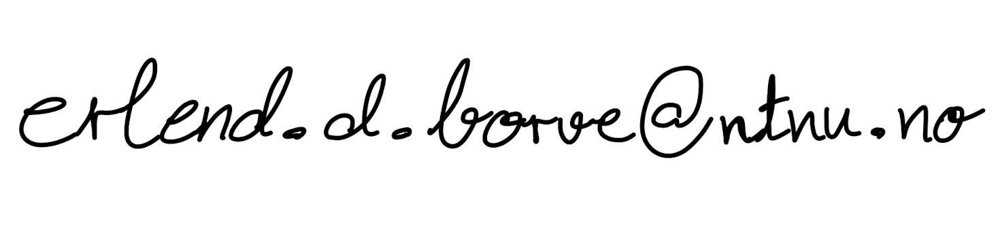

Erlend D. Børve
I am a PhD candidate in the Department of Mathematical Sciences at the Norwegian University of Science and Technology (NTNU), supervised by Aslak B. Buan. My research revolves around the representation theory of algebras, tilting theory and generalisations, and related areas.
Contact information
Room 801Sentralbygg II,
Alfred Getz' vei 1
Gløshaugen
7034 Trondheim
Norway

Official homepage